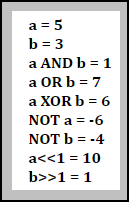

Zadanie 7
Zdefiniuj zmienne przechowujące dwie liczby całkowite. Wyznacz wyniki działań bitowych na tych liczbach (AND, OR, XOR) oraz wyniki negacji obu liczb (NOT) i wyniki przesunieć bitowych o jeden (dla jednej liczby w prawo, dla drugiej w lewo). Wyniki wyprowadź na ekran jak na zrzucie.
Więcej o operatorach bitowych w JavaScript (szukaj w części JavaScript Bitwise Operators) Zamień podane przez ciebie liczby na postać binarną i sprawdź, czy twój skrypt daje poprawne wyniki.